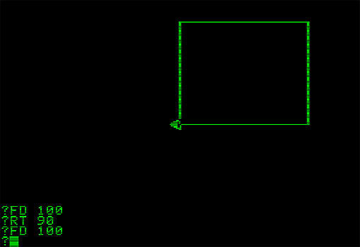

Meet my Super Pet snake
The 'Basic' of today is a snake called Python.

Once upon a time I built a box with the help of a turtle.
TurtleWax (Javascript) https://github.com/davebalmer/turtlewax
The 'Basic' of today is a snake called Python.
|
|
These are also refered to as "programming languages" and "markup languages"
Press run, then modify some code and press "run" again
CSS is what makes the web look nice.
Javascript is what makes the web dance.
... but it helps
/